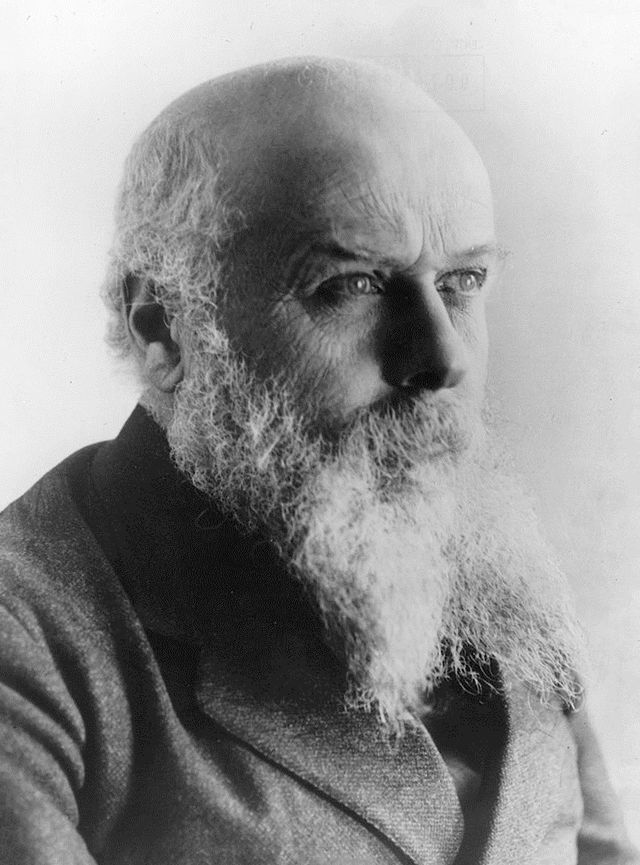

Mozart, the renowned Austrian composer of the classical period, was born on January 27, 1756, in Salzburg. Recognized as a genius from childhood,
he created influential works, including "The Magic Flute" and "Don Giovanni." Growing up in the house of Johann Lorenz Hagenauer, a friend and
merchant, he began his musical journey. Today, the museum dedicated to Mozart houses six of his instruments, including the childhood violin, and
a rich archive of recordings and videos about his life and work. The focal point includes presentations on the composer's travels and his sister Nannerl,
preserving 200 original letters and over 100 autographed manuscripts.

Born in Ivrea on August 13, 1868, Camillo Olivetti, an Italian entrepreneur, graduated in electrical engineering in 1891. He toured the U.S., embraced socialist ideals, and in 1899 founded a small electrical instruments company. In 1908, he established "Ing. C. Olivetti e C." and entered the typewriter industry. Despite challenges, Olivetti's commitment led to rapid expansion. In the 1920s, he founded a foundry and OMO (Officina Meccanica Olivetti). Collaborating with his son Adriano, they reorganized the company, expanding globally. In the 1930s, Camillo delegated more responsibilities to Adriano. Olivetti died on December 4, 1943, leaving a lasting impact on the typewriter industry. 